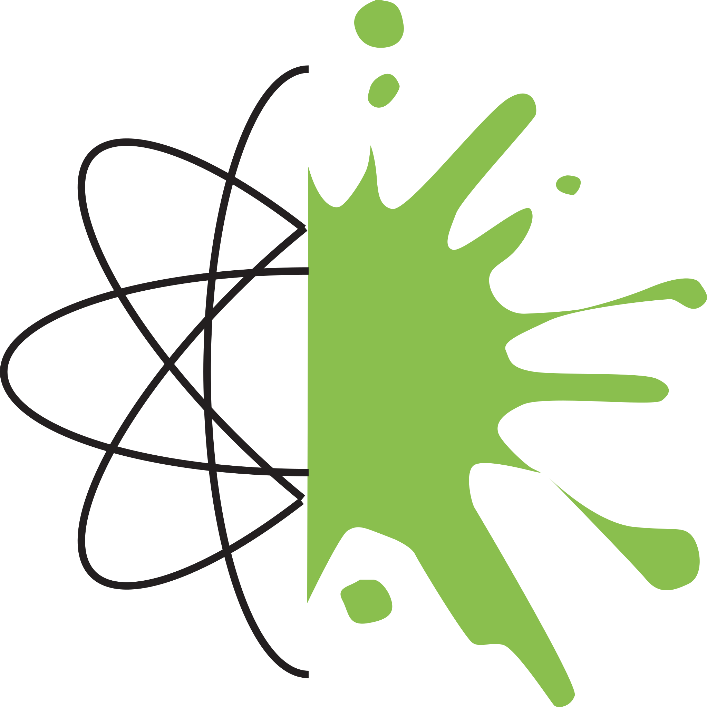

Chemie am WWG.
Chemie am WWG
1. Übersicht über die Unterrichtsinhalte
2. 0902_Energie aus chemischen Reaktionen
3. 0903_Gase in unserer Atmosphäre
4. 0904_Gase, wichtige Ausgangsstoffe für Industrierohstoffe
5. 1001_Wasser, mehr als ein Lösemittel
6. 1002_Saure und alkalische Lösungen in unserer Umwelt
7. 1003_Reaktionen von sauren mit alkalischen Lösungen
8. 1004_Risiken und Nutzen bei der Verwendung saurer und alkalischer Lösungen
9. 1005_Alkane und Alkanole in Natur und Technik
10. 1006_Vielseitige Kunststoffe
.ipynb
.md
.pdf
repository
open issue
Binder
Live Code
3.
0903_Gase in unserer Atmosphäre
¶
2.
0902_Energie aus chemischen Reaktionen
4.
0904_Gase, wichtige Ausgangsstoffe für Industrierohstoffe